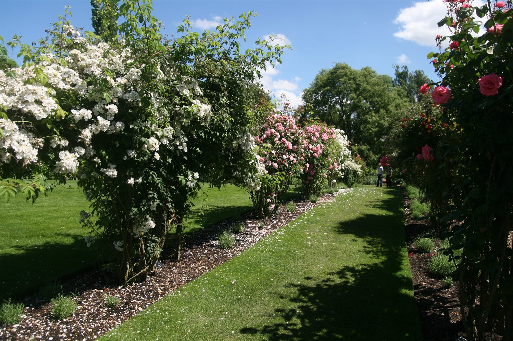

장미 문화의 보급과 국제 교류, 회원 간의 배움과 나눔을 이어가는 한국장미회입니다.
안녕하십니까. 한국장미회 홈페이지를 찾아주신 여러분을 환영합니다.
한국장미회는 장미를 사랑하는 분들이 모여 함께 배우고, 가꾸고, 나누는 비영리 모임입니다. 우리는 세계장미회(WFRS)의 회원 단체로서 국제 무대와 교류하며, 장미 재배 교육과 정원 조성, 전시·축제 참여를 통해 장미 문화를 널리 알리고 있습니다.
2026년, 우리는 더 체계적인 활동과 지속가능한 운영을 위해 사단법인 전환을 추진하고 있습니다. 장미를 통해 사람과 자연, 그리고 세대를 잇는 한국장미회와 함께해 주세요.
※ 인사말 문구는 임시 예시입니다. 회장님 인사말로 교체할 수 있습니다.
한국장미회가 지향하는 가치
장미 재배 지식과 문화를 더 많은 사람에게 쉽고 즐겁게 전합니다.
전정·관리 실습과 특강으로 회원의 전문성을 함께 키웁니다.
회원 간 나눔, 그리고 WFRS를 통한 국제 교류를 이어갑니다.
서울로즈클럽에서 사단법인 한국장미회로
※ 연혁의 일부 연도·내용은 임시 예시입니다. 확정 자료로 교체 가능합니다.
2026년 운영계획 기준 조직과 역할
대외 대표 및 총괄
운영 총괄 및 전략
교육 프로그램 운영
정원 프로젝트
아카이브 및 홍보
외부 협력 및 WFRS
※ 정관·운영계획 등 내부 문서의 핵심 내용을 요약해 안내합니다. (원문 파일은 사무국 보관)